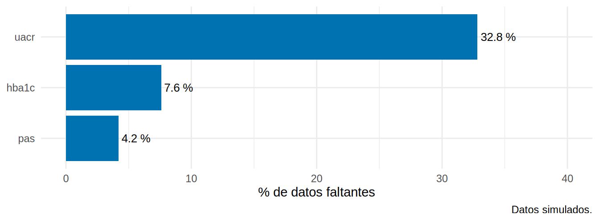
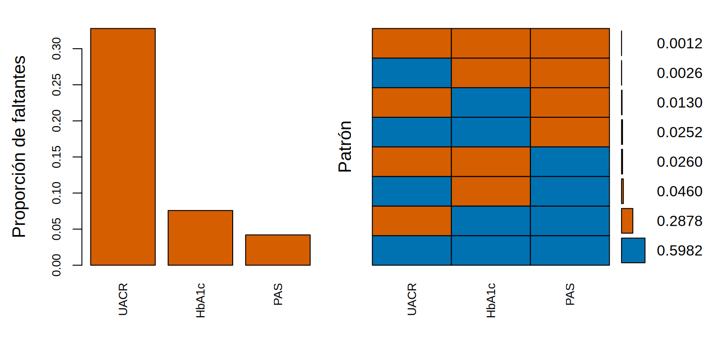

library(tidyverse)
library(mice)
library(broom)
source("R/funciones_epi.R")
source("R/funciones_extra_cap1213.R")
source("R/tabla1.R")
ckd <- read_csv("Bases/ckd_faltantes.csv", show_col_types = FALSE) |>
mutate(sexo = factor(sexo, levels = c("Mujer", "Hombre")),
trat = factor(isglt2, labels = c("Sin iSGLT2", "Con iSGLT2")))Mirar antes de imputar: ¿qué falta y en quiénes?
Nota🩺 Escenario
Recibes una base de 5 000 pacientes con ERC. Antes de elegir un método, haces lo que haría un buen clínico ante un paciente nuevo: explorar. ¿Cuántos datos faltan? ¿En qué variables? ¿Faltan juntos o por separado? ¿Y quiénes son los pacientes con datos incompletos: se parecen a los demás o son otro tipo de paciente?
Es el mapa de la zona antes de operar. Un buen análisis de datos faltantes empieza con tres preguntas descriptivas, que no cuestan nada y evitan errores caros:
- ¿Cuántos faltan y en qué variables?
- ¿Qué patrones hay (¿faltan juntos o separados?)?
- ¿Quiénes tienen datos incompletos (¿se parecen a los completos?)?
Lo que vamos a hacer
- Contar los faltantes por variable y por paciente, y verlos en un gráfico.
- Identificar los patrones de falta.
- Comparar a quienes tienen el dato con quienes no, y modelar la probabilidad de faltar.
Paso 1: ¿cuántos faltan?
Contamos los faltantes de cada variable, y también cuántos pacientes tienen al menos uno:
resumen_falta <- ckd |>
summarise(across(everything(), \(x) sum(is.na(x)))) |>
pivot_longer(everything(), names_to = "variable", values_to = "faltantes") |>
mutate(porcentaje = round(100 * faltantes / nrow(ckd), 1)) |>
filter(faltantes > 0) |> arrange(desc(faltantes))
resumen_falta# A tibble: 3 × 3
variable faltantes porcentaje
<chr> <int> <dbl>
1 uacr 1640 32.8
2 hba1c 379 7.6
3 pas 210 4.2pct_valores <- 100 * mean(is.na(ckd)) # % de TODOS los valores de la base
pct_pacientes <- 100 * mean(!complete.cases(ckd)) # % de pacientes con algún faltante
c(`% de valores faltantes` = pct_valores, `% de pacientes con algún faltante` = pct_pacientes) |> round(1) % de valores faltantes % de pacientes con algún faltante
3.4 40.2 Qué vemos: la UACR falta en el 32.8 %, la HbA1c en el 7.6 % y la PAS en el 4.2 %; las demás variables (incluido el desenlace) están completas. Solo el 3.4 % de valores falta, pero eso significa que el 40 % de los pacientes tiene al menos uno: un análisis de casos completos los perdería todos.
ggplot(resumen_falta, aes(porcentaje, fct_reorder(variable, porcentaje))) +
geom_col(fill = "#0072B2") +
geom_text(aes(label = paste0(porcentaje, " %")), hjust = -0.1, size = 3.4) +
scale_x_continuous(limits = c(0, 40)) +
labs(x = "% de datos faltantes", y = NULL, caption = "Datos simulados.") +
theme_minimal(base_size = 11)
El paquete naniar hace estos resúmenes y gráficos con una función cada uno:
## Con el paquete naniar (no se ejecuta aquí)
library(naniar)
pct_miss(ckd) # % de todos los valores que faltan
pct_miss_case(ckd) # % de filas con algún faltante
gg_miss_var(ckd, show_pct = TRUE) # barras de % faltante por variable
gg_miss_var(ckd, show_pct = TRUE, facet = trat) # ... separado por tratamiento
vis_miss(ckd) # mapa de calor: filas × variablesPaso 2: ¿qué patrones hay?
mice::md.pattern() cuenta cuántos pacientes tienen cada combinación de variables observadas (1) o faltantes (0). La última columna dice cuántas variables faltan en esa combinación:
vars <- c("pendiente_tfg", "isglt2", "edad", "tfg_basal", "ecv", "pas", "hba1c", "uacr")
patrones <- md.pattern(ckd[, vars], plot = FALSE)
patrones pendiente_tfg isglt2 edad tfg_basal ecv pas hba1c uacr
2991 1 1 1 1 1 1 1 1 0
1439 1 1 1 1 1 1 1 0 1
230 1 1 1 1 1 1 0 1 1
130 1 1 1 1 1 1 0 0 2
126 1 1 1 1 1 0 1 1 1
65 1 1 1 1 1 0 1 0 2
13 1 1 1 1 1 0 0 1 2
6 1 1 1 1 1 0 0 0 3
0 0 0 0 0 210 379 1640 2229n_completos <- as.integer(rownames(patrones)[1])Qué vemos: 2 991 pacientes (60 %) lo tienen todo. El patrón de falta más frecuente es solo la UACR (1 439); luego solo HbA1c o solo PAS, y algunas combinaciones. Los faltantes de UACR, HbA1c y PAS ocurren casi independientes: no hay un patrón “monótono” (como el de los abandonos en un ECA, donde quien falta una visita falta todas las siguientes).
El paquete VIM los muestra gráficamente: a la izquierda, el % de faltantes por variable; a la derecha, los patrones (en rojo, lo que falta).
library(VIM)
aggr(ckd[, c("uacr", "hba1c", "pas")], col = c("#0072B2", "#D55E00"), numbers = TRUE, sortVars = TRUE,
labels = c("UACR", "HbA1c", "PAS"), cex.axis = 0.8, gap = 3, ylab = c("Proporción de faltantes", "Patrón"))
Variables sorted by number of missings:
Variable Count
UACR 0.3280
HbA1c 0.0758
PAS 0.0420Paso 3: ¿se parecen los que faltan a los que no?
Se crea un indicador de falta y se compara a los pacientes con y sin dato en el resto de las variables. Si difieren en lo observado, el mecanismo no es MCAR:
ckd <- ckd |> mutate(uacr_falta = factor(is.na(uacr), labels = c("UACR observada", "UACR faltante")))
tabla1(ckd, vars = c("edad", "sexo", "tfg_basal", "hba1c", "pas", "ecv", "isglt2", "pendiente_tfg"),
grupo = "uacr_falta", binarias = c("ecv", "isglt2"), valor_p = FALSE,
etiquetas = c(edad = "Edad, años", tfg_basal = "TFGe basal", pendiente_tfg = "Pendiente de TFGe", isglt2 = "Recibe iSGLT2")) |>
knitr::kable()| Variable | UACR observada | UACR faltante | Total | Faltantes | DEM |
|---|---|---|---|---|---|
| n | 3360 | 1640 | 5000 | ||
| Edad, años, media (DE) | 61.7 (9.6) | 68.1 (9.5) | 63.8 (10.0) | 0 | 0.67 |
| sexo, n (%) | 0 | ||||
| Mujer | 1523 (45.3%) | 735 (44.8%) | 2258 (45.2%) | -0.01 | |
| Hombre | 1837 (54.7%) | 905 (55.2%) | 2742 (54.8%) | 0.01 | |
| TFGe basal, media (DE) | 48.0 (9.1) | 41.7 (8.8) | 46.0 (9.5) | 0 | -0.70 |
| hba1c, media (DE) | 7.8 (1.1) | 7.9 (1.2) | 7.8 (1.2) | 379 (7.6%) | 0.14 |
| pas, media (DE) | 133.8 (14.9) | 137.2 (15.3) | 134.9 (15.1) | 210 (4.2%) | 0.23 |
| ecv, n (%) | 819 (24.4%) | 548 (33.4%) | 1367 (27.3%) | 0 | 0.20 |
| Recibe iSGLT2, n (%) | 1678 (49.9%) | 672 (41.0%) | 2350 (47.0%) | 0 | -0.18 |
| Pendiente de TFGe, media (DE) | -1.6 (1.5) | -2.6 (1.6) | -1.9 (1.6) | 0 | -0.69 |
## DEM (con el grupo 'falta' como "tratado") en las variables sin faltantes
g <- as.integer(is.na(ckd$uacr))
dem_f <- map_dbl(c("edad", "tfg_basal", "pendiente_tfg", "ecv", "isglt2"), \(v) smd(ckd[[v]], g)) |>
set_names(c("edad", "tfg_basal", "pendiente_tfg", "ecv", "isglt2"))
pct_trat <- ckd |> group_by(uacr_falta) |> summarise(p = 100 * mean(isglt2))
round(dem_f, 2) edad tfg_basal pendiente_tfg ecv isglt2
0.67 -0.70 -0.69 0.20 -0.18 Qué vemos: los pacientes con UACR faltante son mucho mayores (DEM +0.67), tienen peor TFGe (-0.70), una pendiente de TFGe más negativa (-0.69), algo más de ECV (+0.20) y reciben menos iSGLT2 (41 % frente a 50 %). El mecanismo claramente no es MCAR. Sugiere MAR (la falta depende de variables que sí observamos) o MNAR.
Modelar la probabilidad de faltar
Una regresión logística del indicador de falta permite cuantificar qué variables la predicen:
m_falta <- glm(is.na(uacr) ~ I(edad / 10) + sexo + tfg_basal + hba1c + pas + ecv + isglt2 + pendiente_tfg,
data = ckd, family = binomial)
or_falta <- tidy(m_falta, exponentiate = TRUE, conf.int = TRUE) |>
filter(term != "(Intercept)") |>
select(term, OR = estimate, conf.low, conf.high, p.value)
or_falta |> mutate(across(where(is.numeric), \(x) round(x, 3)))# A tibble: 8 × 5
term OR conf.low conf.high p.value
<chr> <dbl> <dbl> <dbl> <dbl>
1 I(edad/10) 1.53 1.41 1.66 0
2 sexoHombre 1.05 0.912 1.21 0.5
3 tfg_basal 0.941 0.933 0.949 0
4 hba1c 1.01 0.952 1.08 0.674
5 pas 1.00 0.998 1.01 0.198
6 ecv 1.03 0.881 1.21 0.701
7 isglt2 1.71 1.45 2.02 0
8 pendiente_tfg 0.729 0.686 0.773 0 Qué vemos: la falta de UACR se asocia con mayor edad (OR 1.5 por década), menor TFGe (OR 0.94 por unidad), peor pendiente (OR 0.73 por cada unidad más favorable) y, a igual pendiente y demás covariables, con recibir iSGLT2 (OR 1.7; el efecto crudo es el inverso porque los tratados tienen mejor pendiente). Todas son variables observadas, lo que apoya MAR.
Advertencia⚠️ Lo que este modelo no puede decirte
Que el modelo de falta “ajuste bien” con variables observadas no descarta MNAR: siempre puede haber dependencia del propio valor de la UACR. Este análisis solo muestra qué variables importan para imputar (hay que incluirlas) y qué mecanismo es plausible, no cuál es cierto.
Tip💡 Qué documentar en un artículo (STROBE)
- Número y porcentaje de datos faltantes por variable (incluido el desenlace).
- Comparación de pacientes con y sin datos completos.
- Razones de los faltantes, si se conocen.
- Cómo se trataron (casos completos, imputación) y por qué.
- Análisis de sensibilidad al supuesto sobre el mecanismo (13.6).
Importante🎯 En resumen
- Primero describe: cuántos faltan por variable, qué patrones hay y quiénes son los incompletos.
- Cuenta también los pacientes con algún faltante: pocos valores faltantes pueden dejar fuera a mucha gente.
- Compara completos vs. incompletos con una Tabla 1 por indicador de falta y modela la falta con una logística.
- Si la falta se asocia con variables observadas, no es MCAR; probablemente MAR.
- Que el modelo de falta ajuste bien no descarta MNAR.
Ejercicio
- Compara la pendiente de TFGe de los pacientes con al menos un dato faltante frente a la de los completos.
- Haz una Tabla 1 por el indicador de falta de HbA1c. ¿Se parece al mecanismo de la UACR?
- Ajusta el modelo de falta de la PAS. ¿Qué variable la predice más?